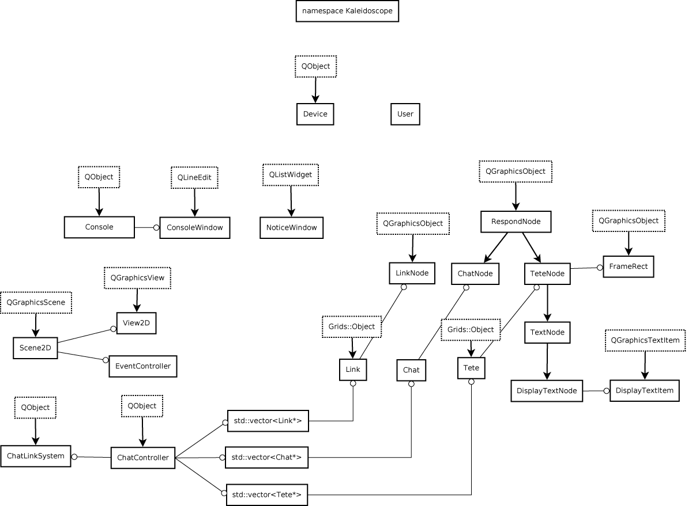

Internals
Systems Overview
- Components
The system is divided roughly into two parts: Grids and Kaleidoscope. Grids is the collection of
tools that handles all things network related. Kaleidoscope are the tools that handle everything else.
The main interface between the two is the Grids::Value, a data type that at the moment
is simply a wrapper around JSON. A Kaleidoscope program packages a Grids::Value with several
required fields, such as the requesting object's GridsID (at the moment a wrapper and a UUID),
the request type, the Grids::Room the event is being broadcast in, and the position in the room.
The Kaleidoscope part of the program then puts all Kaleidoscope related information into the
to the "attr" field of the Grids::Value. For example, a text node would add its text into attr,
while a create link request would add the items being linked into attr.
Any data in the Grids::Value that is neither required or in attr is stripped by the server.
When a Kaleidoscope program sends the Grids::Value to the server, it is broadcasted to all
the other connected Kaleidoscope clients, as well as any Grids servers connected to the
server.
The Qt client is one example of a Kaleidoscope program, though the Eliza chat bot is as well,
as are the bots that interact with IRC and AIM. The server is at the moment the only Grids
program.
- Server
The server was written in Moose, the postmodern object system for Perl, by Mischa Spiegelmock.
One of our
primary concerns when designing it was that it could quickly adapt to changes in the protocol structure.
Very few changes were actually needed though, as the chat client never
utilized multiple data types (images, sound, vector graphics), or the need
for rate limiting depending on the user's position or room, and therefore effectively
acts like a 15 line Python server that bluntly echos all data to all connected users.
Nevertheless, if this program is taken further (which I hope it is), with multiple servers,
and many different data types, then having full featured server will be necessary.
- Protocol
The protocol initiates a session by sending the string: ++Grids/1.0/JSON/name="MY-LONG-UUID",
and the server replies back a confirmation message of the type Connected.
There are several different message types the client and server send, each specified
in the ["_method"] field at
the root level of the Grids::Value. Note that if the ["_broadcast"] field is set to non-empty
the message is echoed to all users connected to the server.
Message Types:
- Connected
Sent when a client has successfully connected to the server.
- Authentication.Login
-
Sent when a client has been authenticated with a public / private key pair. This has
not been implemented at the moment.
- Room.List
If a client sends a message of this type, the server responds with a message of the same
type with a list of the rooms on the server.
- Room.Create
If a client sends a message of this type, the server responds with a message of the same
type listing the ID of the newly created room.
- Room.CreateObject
If a client sends a message of this type, the server responds with a message of the same type,
with the attr field intact.
The client must specify the owner ID, as well as the room it is being created in.
All information specific to the object, not relating to Grids, should go in the
attr field.
- Room.UpdateObject
If a client sends a message of this type, the server responds with a message of the same type,
with the attr field intact.
The client must specify the ID of the object being updated and the room the object is in.
All information specific to the object should go in the attr field.
- Client
The Qt client has two namespaces: Grids and Kaleidoscope. Objects in the Grids namespace
handle network communication; objects in the Kaleidoscope namespace handle display and
user interaction.
The Grids classes are:
- Value
At the moment a wrapper around JSON, with an extra member to describe the message type (
Room.List, Room.CreateObject, etc..., see above).
- Protocol
Packages Grids::Values into necessary network stream, and sends the stream to the server.
It also parses incoming messages and converts them into Grids::Value objects.
- Interface
The interface provides wrapper functions around the potential network actions, such
as requesting a list of rooms on the server (Room.List), creating a room (Room.Create),
creating an object (Room.CreateObject), or updating an object (Room.UpdateObject).
It also creates a Grids::Protocol, and manages the dispatch and collection of network events.
- ObjectController
The Kaleidoscope namespace tends to keep track of items by their pointer, though items are
referenced by their GridsID on the network. One of the main purposes of this class is a method
that converts between a Grids::Object* to its GridsID, and to convert an object's
GridsID to its Grids::Object*.
The second purpose of this class is to parse incoming
messages and dispatch them to the proper Kaleidoscope object. You can think of
Protocol as dealing with raw network streams, Grids::Interface as dealing with the root of a
Grids::Value (the ["_method"] field), while Grids::ObjectController peaks at the contents of attr and
communicates with the Kaleidoscope part of the program..
- Object
A Grids::Object is a virtual base class that holds all the data specific to the object on the
network. At the moment, this is simply its ID, its room, and its position, rotation, and
scale. If any of these values change, a Room.UpdateObject message should be sent.
Diagram of the Kaleidoscope namespace

The Kaleidoscope classes are as follows:
- Device
This is the main organizing object of the program.
The Device has two main roles. The first is to create the top level objects
of the
program (see above and below), as well as the various menus and windows. The second role is to keep track of these
high level objects and to provide accessor methods so that any object with a Device pointer
can have access to these objects.
- User
Kaleidoscope::User holds information about a person using the chat program. At the moment, the main customizable
members of a User are name and color. The User's GridsID is unique and cannot be changed. Frequently messages are
received over the network with only the GridsID of the sender, and the human-readable name must be looked up here.
- Tete
A Kaleidoscope::Tete, from tete-a-tete, is a basic unit of chat information. A sentence, utterance, expression like
"lol" or emoticons like ":)" are all Tetes. You can think of it as a line of text from a
traditional chat program. It also could include a vector drawing, a sound, or an image.
A Tete derives from Grids::Object. You can think of Grids::Object as relating exclusively
to the things in the root of a Grids::Event, while Tete relates to the things in attr.
Tetes can be displayed as TeteNodes (or a derived class of TeteNode).
- Link
A Kaleidoscope::Link is the second basic unit of the chat system, and merely indicates that
two Tetes are connected. In the current implementation, Tetes are represented as TeteNodes,
Links are represented as LinkNodes, and they are organized using a spring system, ChatLinkSystem.
This visual representation, however, is completely independent of the underlying data types.
- Chat
A Kaleidoscope::Chat is the third basic unit of the chat system. A chat is a collection
of Tetes and Links. Chats are displayed with a Kaleidoscope::ChatNode.
- RespondNode
Kaleidoscope::RespondNode is the base class for all objects that react to the UI, automatic view
zooming, and physics system. This class provides an interface for hover events, as well as
providing mutex threading protection for the position of all derived classes. The derived classes
of this object are ChatNode and TeteNode.
- ChatNode
A Kaleidoscope::ChatNode is the visual representation of a Chat. ChatNodes are organized
according to a spring system, just as the Tete representations, TeteNodes, are organized with a spring system.
- TeteNode
A Kaleidoscope::TeteNode is the base class for all Tete representations. It should be kept broad enough
so that it can be used for Tetes of any type, from text to images, to movies, to 3D geometry. That said,
methods such as setText(std::string) and setActiveText(std::string) have managed to make their way into
the class. This is due to the conversion from a GridsID to a Grids::Object derivative. At the moment,
the ChatController can only convert a GridsID into a TeteNode, NOT into a more specific class,
such as TextNode, or DisplayTextNode. To remedy this, I may need to add more specific "Controller"
objects, such as TextObjectController, or ImageObjectController, that could guarantee that the GridsID
belongs to TextNode, ImageNode (which doesn't exist), or any other node.
- TextNode
This is the base class for all nodes that are primarily text based. All TextNode derivatives have
a QGraphicsTextItem derivative called text_item_, and a name member that holds the human-readable representation
of the creator's name..
- DisplayTextNode
DisplayTextNode is the final derived class of RespondNode. Originally there was going to be two derivatives
of TextNode: DisplayTextNode and InteractiveTextNode. However, much to my surprise, Qt allows
any element of text to become a full fledged text editor with a single function call. Therefore,
switching between a piece of display text and input text became trivial. I decided to leave the
class names as they stand in case this project moves to another platform where static text and text
input boxes are different entities.
- FrameRect
A Kaleidoscope::FrameRect is a helper object used for the automatic view zooming system. When the user
rolls over a Node, a FrameRect is created. The FrameRect is large enough to cover the Node plus all
nodes liked to or from it. When the user rolls out of the FrameRect, a callback is sent to the
ChatController to begin zooming out.
- LinkNode
A Kaleidoscope::LinkNode does not derive from RespondNode, as it does not react to user input. A
LinkNode is simply a visual representation of the connection between two nodes; it's just a line.
- ChatController
This is a mixture of a Kaleidoscope::Device and a Grids::ObjectController; it creates many of the
objects used to manage Chats, Tetes, and Links, and provides accessor methods to access these objects.
Equally important, the ChatController is able to translate from a GridsID to a Tete*, Link*, or Chat*.
This makes it a finer grained version of the Grids::ObjectController, which is only able to translate
from GridsID to Grids::Object*. It would be useful in the future to create a TextObjectController, or
redesign these functions with a universal system to convert from a GridsID to a DataType pointer.
This will almost certainly require using Templates.
- ChatLinkSystem
I AM THREADED!
The ChatLinkSystem runs the physics simulation between nodes in a chat, and between the chats
themselves. It updates the node's positions behind the scenes, though only updates objects
that are derived from RespondNode, with mutex locks on their positions.
- Scene2D
This is a simple wrapper around a QGraphicsScene. Qt organizes visual objects in scenes (QGraphicScenes)
and views (QGraphicViews). A scene is a collection of objects (QGraphicObjects, QGraphicItems,
RespondNode or LinkNodes). A view is a view of that scene, perhaps only focusing on a particular part
of the scene, or at a particular scale.
- View2D
A simple wrapper around QGraphicsView.
- UsersScene
Kaleidoscope::UsersScene is a scene that contains OtherUsersNode. This is best thought of as a
buddy list. Unlike a traditional buddy list, I implemented it with rich drawing capabilities,
so the buddy list could
be much more dynamic or visually rich than a list of names, perhaps displaying connections
or meta information.
- UsersView
A simple wrapper around QGraphicsView, and offers the view of the UsersScene.
- OtherUsersNode
This is the representation of another user in the UsersScene. This can be though of as a BuddyIcon,
though again could be much more dynamic and visually rich, if time and or effort were put into it.
Notes on other classes:
There are several more classes, left over from experiments and dead ends. I haven't tried removing
them from the program, and I don't want to spend the time debugging what pops up when I do remove them.
Feel free to ignore all other classes than the ones above.
- Bots
Bots are a crucial part of my application, and I utilize them in several ways. First, bots provide an
interface between clients and outside protocols, for instance the AIM/Google Chat libpurple bot (not fully implemented).
The bot listens for requests sent over the Grids protocol, opens communication with the outside protocol, and translates
messages back into the Grids protocol.. This allowed me to write the
chat code in Perl on a Linux server, rather than in the C++ Qt client. The second purpose of bots is to organize
and find references for current chats. Bots have the potential to download information about topics and append this
information to relevant nodes, augmenting the chat in many useful ways.
The third use of bots has been in debugging, to simulate conversations, and to test network loads.
Eliza, an ELIZA chatbot running the DOCTOR script, is useful for recreating and testing conversations. Eliza is located in
the bots directory, as eliza_bot.pl. Other bots
exist in the /t folder to test network loads.
- Style
One thing you may notice with this program are several inconsistancies of naming conventions.
For instance, Kaleidoscope::Device has accessor methods named getEventController() and
event_controller(), both of which return the same Kaleidoscope::EventController pointer.
This is due to the fact that I only discovered the Google C++ style guide after starting to write
the Device, Controller classes, and networking code. Changing the names (and debugging any
potential problems), was something I was always meaning to get around to changing.
So, besides these exceptions, the code adhears to the Google C++ style guide except for the
following:
- Namespaces start with capital letters
- I do not limit the width of text on a page to 80 characters..
- Function names do not start with a capital letter, ie I say doSomethingExciting(),
not DoSomethingExciting().
Installation
Note, README contains identical information.
Setting up the system:
- Set up the Grids server
- Download grids-platform from Google code:
homepage: http://code.google.com/p/grids-platform/
svn: svn co http://grids-platform.googlecode.com/svn/trunk/ grids-platform-read-only
- Set up grids-platform as per instructions
- Install VM components in lib/Grids/VM/Memory and lib/Grids/VM/Register with command:
perl Makefile.PL ; make ; make test; make install
- Install main components in the base directory with:
perl Makefile.PL ; make ; make test; make install
- Start the server. The kaleidoscope directory has a folder called "sh" that contains a file called "start_node". This script can assist you in starting a node. Be sure to update several parts of the command, including the location of perl 5.10, and the location of grids-platform. In my case, kaleidoscope and grids-platform are in the same directory.
- Compile the Qt C++ client
- Download the Qt SDK from:
homepage: http://qt.nokia.com/products
- Install SDK
- Open the Kaleidoscope project, found in Qt/Kaleidoscope/Kaleidoscope.pro
- Update the server location in include/kaleidoscope/define.h, by changing the values of:
#define GRIDS_SERVER "mmmii.net"
#define DEFAULT_SERVER "mmmii.net"
replacing mmmii.net with the location of your server. Of course, you're more than welcome to use mine. :)
- Compile and run
NOTE: If you want to build a static version of the app, one that will run without the Qt framework installed on the machine, different steps must be taken depending on the platform.
- OS X: Build the application as usual, then run the python script sh/package, found in the base of the Kaleidoscope directory. All necessary libraries should automatically be included into the .app folder.
- Windows: The easiest way to build a static app is to build Qt statically. Instructions can be found here:
http://doc.trolltech.com/4.1/deployment.html
Included libraries / files from other authors:
Jsoncpp
homepage: http://jsoncpp.sourceforge.net/
svn: svn co https://jsoncpp.svn.sourceforge.net/svnroot/jsoncpp jsonpp-read-only
Used in Qt C++ client for JSON parsing.
NOTE: I had to make slight changes to this library so that it would work with Qt, namely
removing all exceptions (statically built Qt apps built on Windows don't like exceptions).
Purpled
homepage: http://code.google.com/p/purpled/
svn: svn co https://purpled.svn.sourceforge.net/svnroot/purpled/trunk purpled-read-only
Runs in background on server to provide an interface with libpurple.
NOTE: I had to make slight but significant changes to this code, that's why it's included
in the Kaleidoscope directory.
Irrlich
homepage: http://irrlicht.sourceforge.net/
download: http://irrlicht.sourceforge.net/downloads.html
Used for its vector, matrix, and fast math libraries.